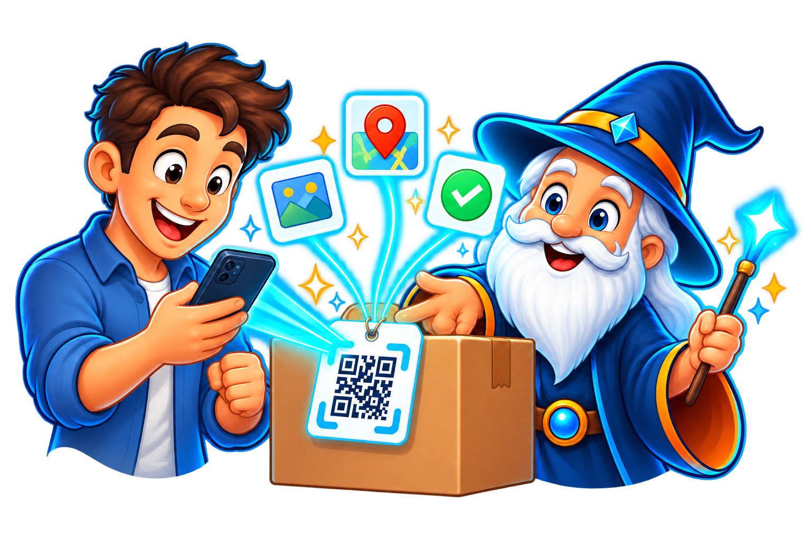

01 · DESDE EL TELÉFONO
Mobile
Sacá una foto, dejá que la IA prepare la ficha y leé etiquetas QR.
mobile.lens.glaciar.org
INVENTARIO VISUAL CON IA
Una foto. Una ficha. Un QR.
Reconocé lo que tenés, organizalo y volvé a encontrarlo desde cualquier dispositivo.
LLEVATE LA DEMO
Mobile para clasificar y leer etiquetas. Web para recorrer todo el inventario.
Sacá una foto, dejá que la IA prepare la ficha y leé etiquetas QR.
mobile.lens.glaciar.org
Buscá objetos, revisá fichas y compartí la etiqueta asociada.
web.lens.glaciar.orgCONFIANZA ANTES DEL DEPLOY
Playwright recorre Mobile y Web en staging. Cada ejecución publica resultados, videos y traces que se pueden revisar desde el navegador.
Abrir evidencia E2E